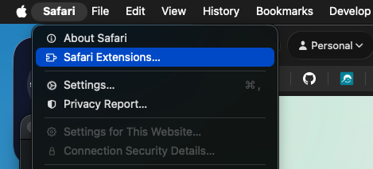
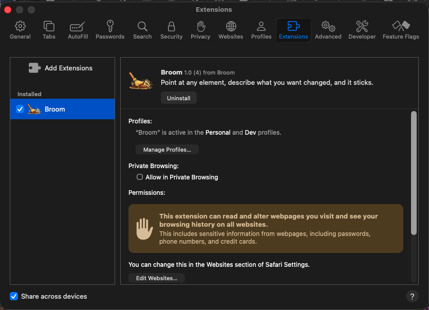
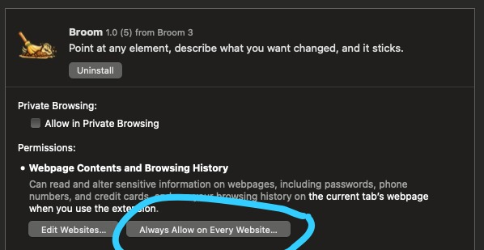
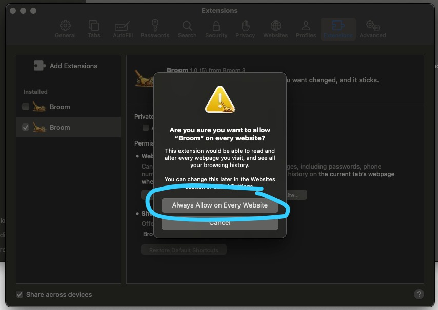

Safari Extension

Sweep clutter off any website. Hide the elements you don't want, plant something nice in the empty space, and your changes come back every visit.
Turn it on
-
Click to open Safari Extensions.
Nothing happened? Open it manually
-
Open Safari, then click Safari in the macOS menu bar and choose Settings…

-
Switch to the Extensions tab.

-
Open Safari, then click Safari in the macOS menu bar and choose Settings…
- Enable Broom in the sidebar.
-
Set its access to Always Allow on Every Website, then confirm.


- Click the Broom icon in any tab to start sweeping.
Private by default
- Nothing about your browsing leaves your Mac.
- Rules live in Safari's local extension storage.
- No accounts needed 🎉
Sweeping
- Tap the floating 🧹 in the bottom-right of any page, then pick 🧹 Broom.
- Left-click an element to sweep it away.
- Press Esc to exit.
Planting
- Open the floating broom, pick 🌱 Plant.
- Click any cleared spot to drop a plant.
- Hit Shuffle to swap it.
Restoring
- Open the floating broom, pick ♻️ Restore.
- Click the + on a hidden element to bring it back.
- ⚙️ Settings → Restore original wipes your changes on the whole site.